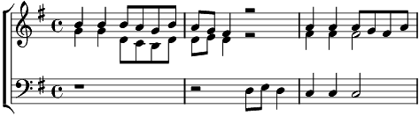

Refrain:
Bleu bleu le ciel de Provence
Blanc blanc blanc le goëland
Le bateau blanc qui danse
Blond blond le soleil de plomb
Et dans tes yeux
Mon rêve en bleu
1. Quand j'ai besoin de vacances
Je m'embarque dans tes yeux
Bleus bleus comm'un ciel immense
Et nous partons tous les deux
Refrain
2. Quand le vent claque la toile
De ton joli jupon blanc
Blanc blanc blanc comm'une voile
Je navigue éperdument
Refrain
3. Tes cheveux d'un blond de rêve
Déferlent en flots le gers
Blonds blonds blonds sur une grève
Je voudrais naufrager
Refrain